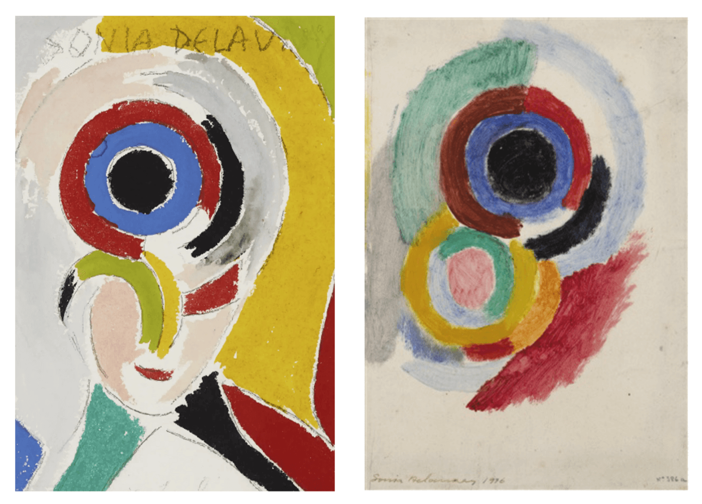

Pour cette séquence sur l'autoportrait, j'ai choisis de travailler plus particulièrement sur la photographie et l'exploration de différents styles d'autoportraits à travers les époques.
J'ai sélectionné divers autoportraits de différentes périodes et styles pour montrer aux élèves la diversité des expressions artistiques. Les activités principales incluaient :

J'ai créé des fiches mémo d'artistes et des feuilles de travail pour accompagner la leçon. N'hésitez pas à suggérer des références d'artistes supplémentaires pour enrichir la diversité des exemples d'autoportraits !


Cette séquence permet aux élèves de découvrir comment les artistes se représentent eux-mêmes à travers différents médiums et époques.